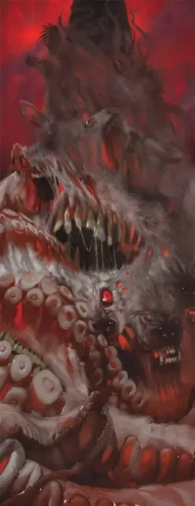

Высший эмиссар звёздных порождений
Greater Star Spawn Emissary
Огромная Аберрация

Класс Доспеха 15 (природный доспех)
Хиты 290 (20к12 + 160)
Скорость 40 футов, летая 40 футов (парит)
| мод | спас | ||
|---|---|---|---|
| СИЛ | 24 | +7 | +7 |
| ЛОВ | 13 | +1 | +1 |
| ТЕЛ | 26 | +8 | +15 |
| мод | спас | ||
|---|---|---|---|
| ИНТ | 27 | +8 | +15 |
| МДР | 22 | +6 | +13 |
| ХАР | 25 | +7 | +14 |
Навыки Восприятие +13, Магия +22
Сопротивление урону кислота, некротическая энергия, психическая энергия, силовое поле
Иммунитет к состояниям испуг, очарование
Чувства истинное зрение 120 футов
Языки Все, Телепатия 1000 фт.
Опасность 21 (33000 опыта)
Бонус мастерства +7
Особенности
Легендарное сопротивление (4/день). Если эмиссар проваливает спасбросок, он может вместо этого сделать спасбросок успешным.
Необычная природа. Эмиссар не нуждается в воздухе, еде, питье или сне.
Действия
Мультиатака. Эмиссар совершает три атаки.
Хлещущая пасть. Рукопашная атака оружием: +14 к попаданию, досягаемость 15 фт., одна цель. Попадание: 20 (2к12 + 7) колющего урона и 13 (3к8) урона кислотой.
Психическая сфера. Дальнобойная атака заклинанием: +15 к попаданию, дальность 120 фт., одно существо. Попадание: 27 (3к12 + 8) урона психической энергией.
Неземная желчь (перезарядка 5-6). Эмиссар извергает желчь, покрывая брызгами всех существ в сфере радиусом 30 футов, с центром в точке в пределах 120 футов от эмиссара. Каждое существо в этой области должно совершить спасбросок Ловкости Сл 23, получая 55 (10к10) урона кислотой при провале или половину этого урона при успехе. В свободном пространстве в пределах 30 футов от каждого провалившего спасбросок существа на поверхности, которая может выдержать его, появляется бормочущий ротовик [gibbering mouther]. Бормочущие ротовики действуют сразу после эмиссара, получая бонус +7 к броскам атаки и урона, и сражаются до тех пор, пока не будут уничтожены. Они исчезают, когда эмиссар умирает.
Легендарные действия
Эмиссар может совершить 3 легендарных действия, выбирая из представленных ниже вариантов. За один раз можно использовать только одно легендарное действие, и только в конце хода другого существа. Эмиссар восстанавливает использованные легендарные действия в начале своего хода.
Атака. Эмиссар телепортируется на расстояние до 30 футов в свободное пространство, которое он может видеть, и совершает одну атаку.
Искривление пространства (стоит 2 действия). Эмиссар заставляет землю в 20-футовом квадрате, который он может видеть в пределах 90 футов от себя, превратиться в зубы и пасти до начала своего следующего хода. На это время местность становится труднопроходимой. Любое существо получает 10 (3к6) колющего урона за каждые 5 футов, которые оно проходит по этой местности.
Облако разума (стоит 3 действия). Эмиссар выпускает психическую волну. Каждое существо в пределах 30 футов от эмиссара должно преуспеть в спасброске Мудрости Сл 23 или получит 32 (5к12) урона психической энергией. Кроме того, все заклинания на существах и объектах по выбору эмиссара в этой области заканчиваются.
Описание
Высшая форма эмиссара отбрасывает все претензии на то, чтобы быть частью реальности плана, и открыто издевается над ней. Разрушительный титан, эта форма возвышается в 25-футовом столбе жестокой плоти, объединяющей плоть и голоса всех форм, которым когда-либо подражал эмиссар. Проявления инопланетного голода извергаются из этого ужаса волнами голодных органов и психических атак, разрушающих разум.
См. дополнительно статью: "Бестиарий: Эмиссары звёздных порождений"